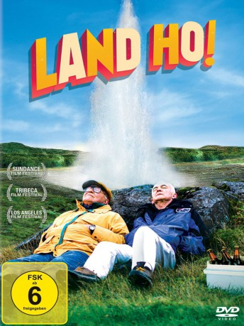

#9143 Land Ho!
 
 IMDB-Wertung: 5.9 / 10
IMDB-Wertung: 5.9 / 10  Tomatometer: 82
Tomatometer: 82  Metascore: 0
Metascore: 0 
Colin (Paul Eenhoorn) und Mitch (Earl Lynn Nelson) sind ehemalige Schwager - die beiden verbindet eine langjährige Freundschaft, obwohl sie sehr verschieden sind. Während Colin eher ruhigen Gemütes durchs Leben geht, ist Mitch viel impulsiver und voller Tatendrang. Nun wollen es die beiden Rentner noch einmal wissen und etwas Spektakuläres erleben. Ein gemeinsamer Road Trip ins ferne Island steht auf dem Programm. Vor der malerischen Kulisse des europäischen Inselstaates erleben sie ein Abenteuer nach dem anderen und geraten immer wieder in allerhand witzige Situationen. Zumal die zwei Männer jenseits der 60 keine Probleme zu haben scheinen, sich mit den Inselbewohnern oder anderen Touristen zu verständigen. Dennoch merken sie während ihrer Reise, dass man auch im Alter niemals auslernt...
Jahr: 2014
Dauer: 95 Minuten
FSK: 6
Land: Island Studio: Sony Pictures Home EntertainmentTonspuren: DD5.1 - ,
Untertitel:
Auflösung: 1080p (1920x1080) Größe: 7413 MB
Genre: Komödie, Abenteuer
Regisseur: Aaron Katz, Martha Stephens
Drehbuch: Kakifly
Soundtrack: Keegan DeWitt
Darsteller:
- Earl Lynn Nelson als Mitch
- Paul Eenhoorn als Colin
- Daníel Gylfason als Rental Car Employee
- Karrie Crouse als Ellen
- Benjamin Kasulke als Honeymooner
- Alice Olivia Clarke als Nadine
- Þrúður Kristjánsdóttir als Hotel Restaurant Waitress
- Elizabeth McKee als Janet
- Arnar Guðmundsson als Dill Chef
- Magnús Kr. Guðmundsson als Dill Maître D'
- Bjarni Tryggvason als Dill Waiter
- Emmsjé Gauti als Glow Stick Guy
- Christina Jennings als Honeymooner
- Halldóra Guðjónsdóttir als Bikini Girl
- Amy Yoder als Bikini Girl
- Berglind Rós Sigurðardóttir als Girl in club bathroom (uncredited)
- Haraldur Hrafn Thorlacius als Johannes (guy at a bar) (uncredited)
Datei: X:\2014(G-M)\Land Ho! (2014, FSK6, 1920x1080).mkv seit 19.07.2018
Festplatte: HD 2013(I-Z)-2014(A-Z)
 Es gibt insgesamt 136 Filme in der Gruppe '2014(G-M)'
Es gibt insgesamt 136 Filme in der Gruppe '2014(G-M)'